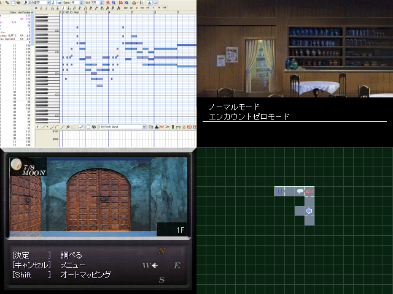

No.26-カオティックお屋敷

■カオティックお屋敷 忌井真色
紹介文
女神転生２が面白すぎて３Ｄダンジョンゲー作り始めちゃいました。 あ、レッドベアーとか出るほうじゃなくてギリメカテとか出るほうです。 堕罪がださいって致命的な誤植ですよねぇ、ハハハ（笑） アピールすべきポイントはBGM全部自作したよとか 敵のドット打ったよとかでしょうか。 ああ、それとオートマッピング機能ですか。 ツクールでオートマッピング実装する馬鹿はおるまいと思ったら すでに数名居たっていう事実には参りましたねぇ、ハハハ（笑）
管理人から一言: 「Wizのダンジョンでお化け屋敷やろうぜ」 「せっかくだからコズミックキューブで」 「やめて！！」
© VIPRPG